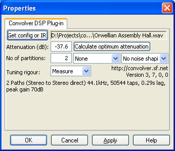

|

| |

Convolver is an open source, high performance Windows application for applying
finite impulse response (FIR) filters to multi-channel digital audio in the form
of
Convolver will take a set of FIR filter files (sound files) and convolve them
with sound paths mixed from the input channels, mixing the results into a set of
specified output channels.
Applications
Why would you want to do this? There are several main applications:
- With a suitable impulse response generated by a tool such as
DRC you will be able
to play sound corrected for your room response. For more details, see
Ed Wildgoose's Duff Room
Correction site.
- You can also use Convolver for bass management, cross-overs, cross-talk
cancellation, equalization and other purposes that require the source signal
to be filtered and redirected to different output channels.
- You can also use Convolver as an effects filter (reverb) in Adobe Audition,
or other sound or music application that accepts DX filters.
Features
- Performance is excellent, possibly the best available under Windows,
and subject continual improvement. A stereo 65536-tap filter, the largest
that makes sense when applied to a 44.1kHz source, executes at 40 times real
time, representing a 3% cpu hit, on a 3.4GHz Pentium 4. Even on a 300MHz Pentium
II, the reported cpu hit is about 30% when convolving with such a filter. So
your old machine can be put to good use. Mixing channels results in some
slowdown (six 65536-tap filters will consume less than 10% cpu on a 3.4GHz Pentium
4).
- Arbitrary-length convolutions for unusual applications (1 million
tap limit imposed only as a sanity check)
- Multi-channel input and output, 8, 16, 20, 24 and 32-bit PCM and
32 and 64-bit IEEE Float
- Mixing, scaling and delay of both input and output channels (eg,
for "true stereo" convolution, or cross-talk cancellation)
- Dither and noise shape of 8, 16, 20 and 24-bit output
- Wide range of filter file formats accepted
(Microsoft WAV, SGI/Apple AIFF/AIFC, Sun AU/Snd, Raw (headerless 32-bit IEEE
float), Paris Audio File (PAF), Commodore IFF/SVX, Sphere/NIST WAV, IRCAM SF,
Creative VOC, SoundForge W64, GNU Octave MAT4/5, Portable Voice Format, Fasttracker
2 XI, HMM Tool Kit HTK)
Sample encodings supported include unsigned and signed 8, 16, 24 and 32 bit
PCM, IEEE 32 and 64 floating point, U-LAW, A-LAW, IMA ADPCM, MS ADPCM, GSM 6.10,
G721/723 ADPCM, 12/16/24 bit DWVWk, OK Dialogic ADPCM, and 8/16 DPCM. Wavpack
files are not currently supported.
- Windows Media Player plug-in (DMO), DirectShow filter
and VST plug-in interfaces
- Several filters can be loaded at once. The first to match the playback
format (channels, sample rate) is automatically selected.
Convolver runs on Windows XP/2000 with
DirectX 9. (It probably won't run on earlier versions of Windows.)
- The Windows Media Player plug-in needs WMP10 or WMP9. Otherwise you will
get a convolverWMP.dll failed to register message upon installation.
If you continue installation in such circumstance, you may, nevertheless, get
access to ConvolverFilter / ConvolverWrapper.
- I have not found a way of running it with the Windows Media Center Edition
(MCE) interface. (It will of course run with WMP under Windows MCE 2005.)
One way of handling this may be to use the VST version
with an Audiotrak Prodigy 7.1 sound card or, on a Sony Vaio,
SonicStage Mastering Studio Audio Filter.
- ConvolverFilter and ConvolverWrapper DirectShow filters need a DX host (eg,
Adobe Audition).
- It may be possible to get ConvolverFilter or ConvolverWrapper to work with
WinAmp using the
Chronotron's
Adapt-X plug-in, but I have not tried it.
From version 2.19, Convolver runs on all x86 cpus. Earlier versions needed
a Pentium 4 class cpu.
Licensing
Convolver is licenced under the
GPL.
|